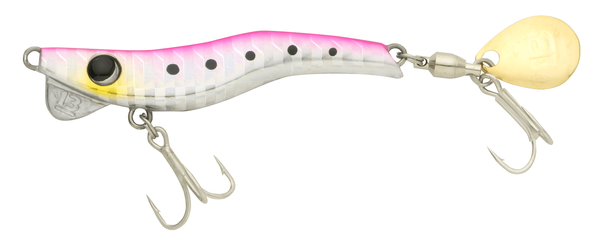
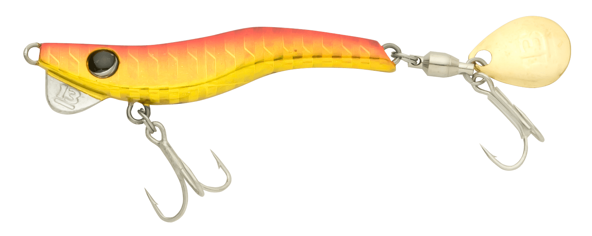
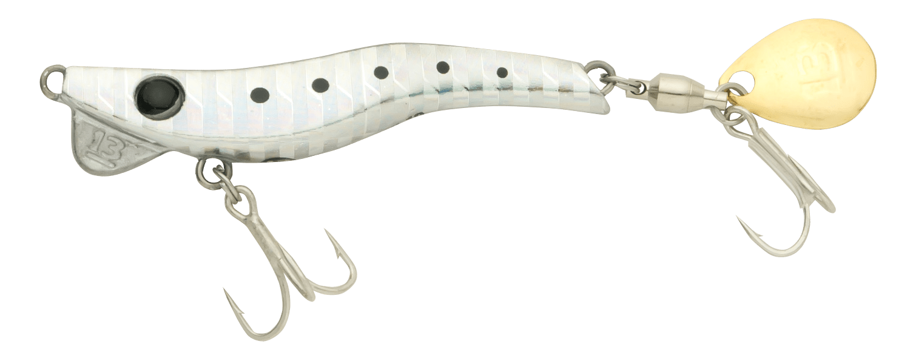
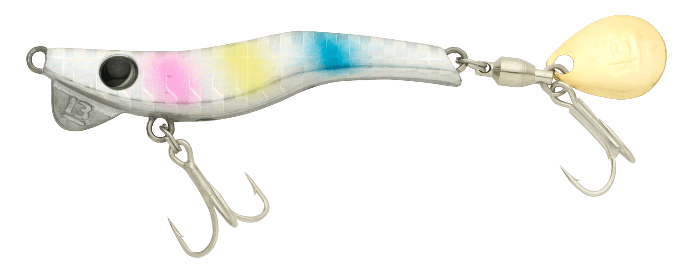
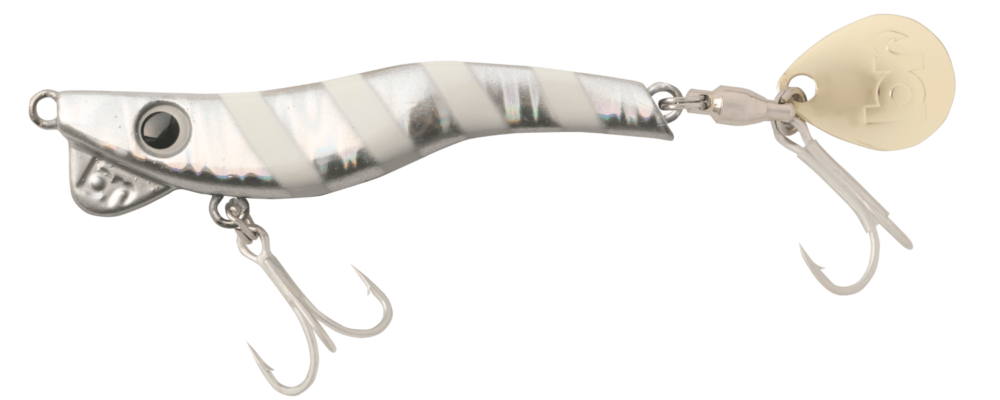
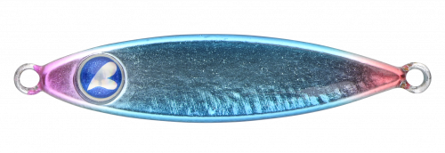
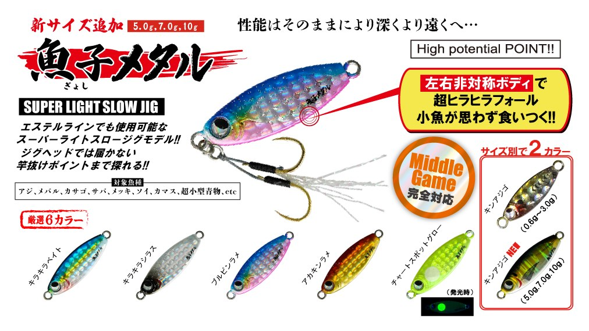

メタルマル19
（Metalmaru19）
メタルマル19（Metalmaru19）はBREADEN（ブリーデン）のブレードジグです。
「魚種限定解除」をうたうブレードジグです。BREADENのロッド「TR/PEスペシャル」×PE0.4号のセッティングで、無風平地100m越えの超遠投を計測。マルアジやサバだけでなく、ライト青物ゲームまで幅広くサポートします。19gは13gとともに全19色がそろう、メタルマルの中心になるサイズです。

画像出典:BREADEN公式HP
スペック
- メーカー
- BREADEN（ブリーデン）
- タイプ
- ブレードジグ（スピンテール系）
- 重さ
- 19g
- 全長
- 55mm
- 推奨適合フック
- ダブル：SD-33TN#8相当
トリプル：ST-46TN#12相当 - カラー
- 全19色
- ターゲット
- マルアジ・マアジ・サバ・シーバス・チヌ・ヒラメ・ハマチなど
- 価格
- 1,100円（税別）
▼今すぐチェック

メタルマル19の特徴
飛んで、広く探って、ブレードで掛ける
-
100m越えの超遠投
TR/PEスペシャル×PE0.4号のセッティングで、無風平地100m越えの超遠投を計測。抜群のボディーバランスで、沖のナブラや潮目まで届く。
-
乗りの悪さを克服したリア構造
リアにコロラドブレードとダブルフックを抱き合わせで装着し、スピンテールジグの弱点だった乗りの悪さやバラシを大幅に減らしている。ブレードへのバイトを掛けていける。
-
魚種を選ばない実績
マルアジ・マアジ・シーバス・チヌ・キビレ・ヒラメ・マゴチ・サバ・ハマチ・メバルに加え、マハゼやアイナメ、さらに非フィッシュイーターまで釣れた実績がある。
メタルマル19の使い方
基本はキャストしてボトムや狙いのレンジまで沈め、ただ巻きで引いてくる使い方です。ブレードが回ってフラッシングと波動で魚を寄せるので、速すぎない一定の速度で巻くのがコツ。
反応がない時はレンジを変えたり、リフト＆フォールを混ぜたりして探りましょう。ハマチなどの本格青物ゲームでは、リングとフックを交換して使うこともできます。
メタルマル19の得意な状況
堤防や砂浜から、マルアジやサバ、小型の青物を広く探したい時が得意です。
公式では、ハマチなどの青物がシラスを食べていてルアーに反応しにくい「シラス付き」のような厄介な場面でも活躍すると紹介されています。
ワンポイント
根掛かりが気になる場所では、シングルフックモデル（13・19・28）を選ぶか、別売のSINGLE HOOK SH01で通常モデルをシングルフック仕様にチューニングするのがオススメです。
サイズの使い分け
| サイズ | 重さ・全長 | 価格（税別） |
|---|---|---|
| メタルマル13 | 13g・55mm | 1,100円 |
| メタルマル19 | 19g・55mm | 1,100円 |
| メタルマル28 | 28g・70mm | 1,200円 |
| メタルマル40 | 40g・73mm | 1,200円 |
| メタルマル60 | 60g・75mm | 1,300円 |
※数値は公式ページより。シングルフックモデルは13・19が1,100円、28が1,200円（税別）。13・19は全19色、28・40・60は一部の色のみの展開です。
オススメカラー
メタルマル19は全19色。28・40・60と共通の定番カラーから4色を紹介します。

01 レッドゴールド赤×金のアピール系。朝夕のローライトや濁りに。

02 シルバーイワシイワシを思わせるナチュラルなシルバー。まず1つ選ぶならこの色。

10 コットンキャンディパステル系のカラー。日中の澄んだ水で見切られにくい。

16 グローゼブラグローのゼブラ柄。夜や深場でのアピールに。
画像出典:BREADEN公式HP
メタルマル19に似ているルアー
-

シーライドミニ ブルーブルー 詳細はこちら＞小さなマイクロジグ。より小さいベイトに合わせたい時に。
-

魚子メタル RUDIE'S 詳細はこちら＞軽量のスーパーライトスロージグ。アジやメバルを繊細に狙う時に。
-
 ガルバ64S
DAIWA
詳細はこちら＞
ガルバ64S
DAIWA
詳細はこちら＞
DAIWAの小型シンキングペンシル。巻きで小型の回遊魚を探す時に。